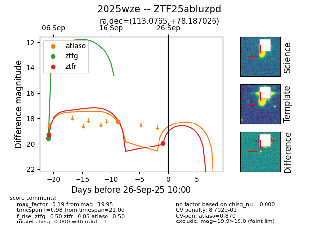
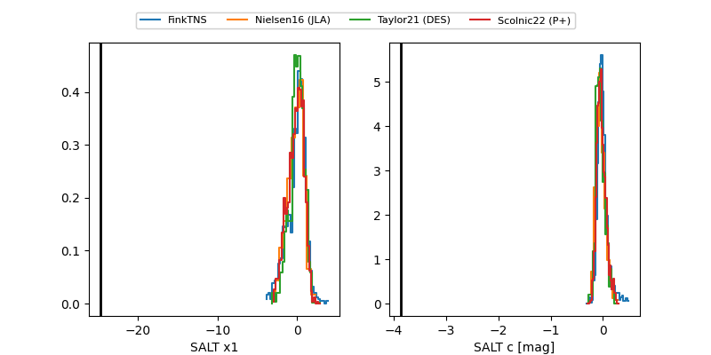

FINK: ZTF25abluzpd
Lasair: ZTF25abluzpd
ALeRCE: ZTF25abluzpd
TNS: 2025wze
YSE: 2025wze
ZTF25abluzpd (ztf,fink)
2025wze (tns,yse)
equatorial (ra, dec) = (113.0765,+78.18703)
galactic (l, b) = (136.1974,+28.59687)


last atlaso=18.26, ztfg=19.56, ztfr=19.95
1 atlaso, 1 ztfg, 2 ztfr detections